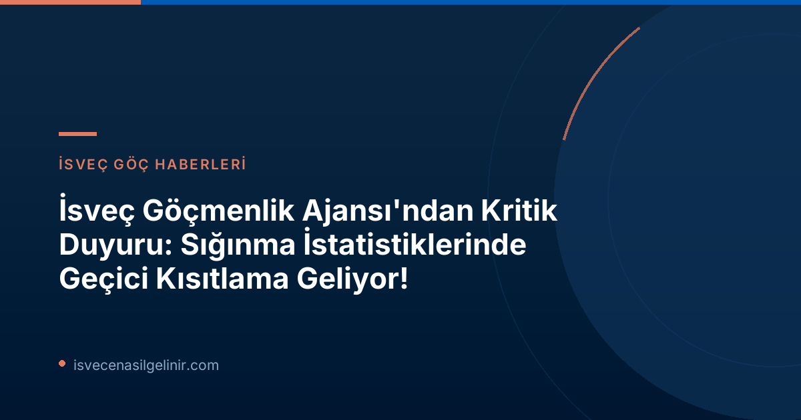

İsveç Göç İdaresi'nden Kritik Duyuru: Sığınma İstatistikleri Geçici Olarak Durduruldu!
İsveç Göç İdaresi (Migrationsverket), 22 Haziran 2026 tarihli açıklamasıyla kamuoyunu önemli bir konuda bilgilendirdi: Uluslararası koruma ve sığınmaya yönelik istatistiklerin sunumunda geçici bir kısıtlamaya gidiliyor. Bu kısıtlama, 12 Haziran 2026 tarihinden itibaren yürürlüğe giren Avrupa Birliği'nin (AB) yeni ortak göç kuralları (Göç ve İltica Paktı) nedeniyle ortaya çıktı. Migrationsverket, yeni düzenlemeler nedeniyle tam ve güvenilir istatistikler sağlayamayacağını belirtiyor.
AB Ortak Göç Kuralları ve Değişen Süreçler
12 Haziran'da yürürlüğe giren AB'nin Ortak Göç Kuralları veya diğer adıyla Göç ve İltica Paktı, AB'ye yönelik ve AB'den yapılan göçün yönetilme biçiminde köklü değişiklikler getiriyor. Bu değişiklikler, özellikle uluslararası koruma (sığınma) süreçlerini derinden etkiliyor. Migrationsverket'e göre, yeni kurallar idarenin uluslararası koruma ile ilgili verileri kaydetme, tanımlama ve takip etme şekillerini doğrudan etkiliyor. Güvenilir istatistikler üretebilmek için kurumun sistem altyapısının bu yeni kurallara uyarlanması ve takip için gerekli teknik yapıların oluşturulması gerekiyor.
Migrationsverket Planlama Direktörü Eric Ramstedt, sistem uyarlamalarının henüz tamamlanmadığını ve bu nedenle 12 Haziran sonrası oluşturulan istatistiklerin hatalı veya yanıltıcı olabileceği riskini dile getirdi. Bu sebeple, etkilenen konularda ön veriler veya manuel olarak hazırlanan istatistiksel özetler yayınlanmayacak.
Hangi İstatistikler Etkilenecek? Bilmeniz Gerekenler
Bu geçici kısıtlama, çeşitli göçmenlik ve sığınma istatistiklerini doğrudan etkileyecek. İşte başlıca etkilenen alanlar:
| Etkilenen İstatistik Kategorisi | Detaylar |
|---|---|
| Uluslararası Koruma (Sığınma) Başvuruları | Yeni gelen sığınma başvuruları ile ilgili veriler. |
| İnfaz Engelleri ve Geri Dönüşler | Sınır dışı edilme ve geri dönüş süreçleriyle ilgili istatistikler. |
| Tarama (Screening) Süreçleri | Sınır prosedürleri ve ilk inceleme süreçleri hakkındaki veriler. |
| İlgili Diğer İstatistikler | Uluslararası koruma sürecine bağlı olarak derlenmesi gereken diğer tüm veriler. |
Ayrıca, 12 Haziran'dan önce yapılmış ve bu tarihten önce karara bağlanmamış sığınma başvurularıyla ilgili istatistikler de bu kısıtlamadan etkilenecek. Migrationsverket, gerekli bilgi teknolojisi (IT) altyapıları tamamlandığında istatistikleri geriye dönük olarak hazırlayacağını bildirdi. Bu yapıların oluşturulması çalışmaları ise 2026 sonbaharı boyunca aşamalı olarak devam edecek.
Gelecekteki Veri Yayınları ve Dikkat Edilmesi Gerekenler
Eric Ramstedt, istatistiklerin ne zaman tekrar güvenilir bir şekilde sağlanabileceği konusunda kesin bir tarih veremeyeceklerini, ancak bu konudaki çalışmaların hızla devam ettiğini belirtti.
Önemli Bilgi: 15 Temmuz'dan İtibaren Yayınlanacak Veriler
Migrationsverket web sitesinde, 15 Temmuz 2026 tarihinden itibaren mevcut istatistik yayınları durdurulacak. Ancak, uluslararası koruma istatistiklerinin geliştirilmesi devam ederken, Göç İdaresi kayıtlı uluslararası koruma başvurularının sayısına ilişkin verileri yayımlayacak. Bu veriler, kurumun vaka yönetim sisteminden alınacak ve yine 15 Temmuz'dan itibaren erişilebilir olacak.
DİKKAT: Yayımlanacak bu bilgiler, resmi birer istatistik olarak kabul edilmemelidir ve eksiklikler içerebileceğinden dikkatle yorumlanmalıdır. Ayrıca, bu veriler daha önce sunulan gelen sığınma başvurusu istatistikleriyle karşılaştırılabilir nitelikte değildir. İsveç Vatandaşlık Sınavı hakkında güncel bilgilere ulaşmak isteyenler bu ayrımı göz önünde bulundurmalıdır.
Uzman Yorumu ve Göçmenler İçin Ne Anlama Geliyor?
Bu geçici kısıtlama, İsveç'teki göç süreçlerini takip edenler ve değerlendirme bekleyen sığınmacılar için belirsiz bir süreç yaratabilir. Özellikle uluslararası koruma başvurusu yapmış veya yapmayı düşünen kişilerin, güncel duruma ilişkin kesin ve detaylı istatistiksel verilere erişimde zorluklar yaşayabileceği anlamına geliyor. Migrationsverket'in şeffaflık ve veri erişilebilirliği konusundaki taahhüdü devam etse de, bu durum uyarlama sürecinin karmaşıklığını ve önemini gözler önüne seriyor. İdare, IT altyapısını yeni AB kurallarına tamamen uyarlayana kadar, açıklanan ham verilerin dikkatli bir şekilde değerlendirilmesi ve önceki dönemlerle doğrudan karşılaştırmalardan kaçınılması büyük önem taşımaktadır.
Referanslar:
- Migrationsverket Resmi Duyurusu: Tillfällig begränsning av statistik om internationellt skydd och asyl
- İsveç Vatandaşlık Sınavı
İsveç ile İlgili Daha Fazla Güncel Bilgi mi Arıyorsunuz?
İsveç'te yaşam, eğitim, çalışma ve vatandaşlık süreçleri hakkında en doğru ve güncel bilgilere ulaşmak için sitemizi ziyaret edin. Uzman ekip rehberliğinde tüm sorularınızın cevabı burada!